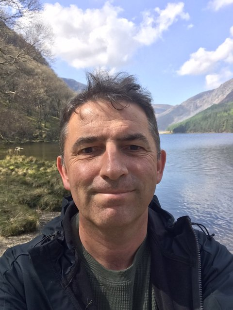

I am a cosmologist and computational astrophysicist at ICRAR, The University of Western Australia, based in Perth. My PhD, in computational cosmology, is from Durham University (2004), following an MA in theoretical physics from Trinity College Dublin (1999). I held postdoctoral positions at Swinburne University of Technology and the University of Leicester before moving to ICRAR/UWA in 2011, where I have since been an ARC Future Fellow, an Associate Professor, and, since 2021, a Research Professor.
I founded and built the ICRAR/UWA Cosmological Theory group, and led theory within the ARC Centres of Excellence for All-Sky Astrophysics (CAASTRO) and for All-Sky Astrophysics in 3 Dimensions (ASTRO 3D). None of that work happens without computing at scale, so I have also taken on significant national roles in scientific high-performance computing. This includes serving on supercomputing time-allocation committees for Australia's peak HPC facilities, chairing the Astronomy Data and Computing Services committee at Astronomy Australia Limited, and contributing to the Australian Academy of Science's Decadal Plan for Astronomy. I think of this as part of doing the science, not something separate from it.
I work across most of what this kind of research requires: simulation codes, analysis pipelines, and the more traditional parts of the job — teaching, supervision and grant writing.
I tend to be more interested in good questions than in maintaining a fixed research programme. The problems I work on have changed over time, but I have generally been drawn to questions where different pieces of physics meet, and where it is possible to use computation to separate them and see what follows.
I think of simulations as numerical experiments. Their value is not simply that they can reproduce a complicated system, but that we can change one part of the calculation, follow the consequences, and ask which features of the result are robust. That also means being clear about what has been assumed. A simulation can give a very precise answer to the wrong question, and a convincing agreement with observations does not necessarily tell us which underlying explanation is correct.
I try to bring the same attitude to collaboration and supervision. My aim is to give people enough freedom to develop their own ideas while being available when they need help, and to treat students and early-career researchers as researchers rather than as extensions of my own work. Good supervision should leave someone more independent than when they started.
I also value things that are useful beyond the immediate problem. A piece of software, a well-designed analysis pipeline, or a careful numerical test can sometimes be more valuable over time than a single result. Much of the computational infrastructure I have worked on has grown out of that instinct.
I have supervised PhD and Masters students and postdoctoral researchers since 2011. Some have gone on to academic positions in Australia and overseas, while others have moved into industry roles in data science and computing.
I am interested in supervising people who want to understand the physics rather than simply apply a particular technique, and who are willing to question their own assumptions as well as those of their models.
Outside work, I run, mostly on trails, and spend a fair amount of time walking. I read, listen to a lot of music, and grow my own vegetables. I also have a longstanding interest in history and philosophy, particularly in the relationship between practical and theoretical knowledge — the things we know by doing, and the things we know by thinking about.